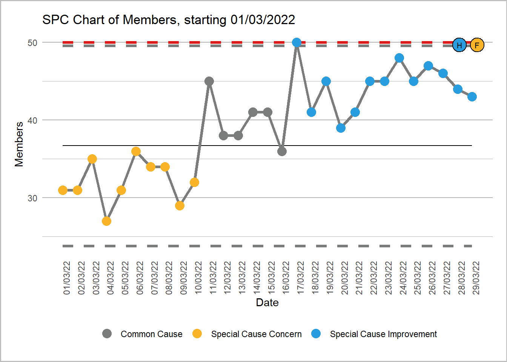
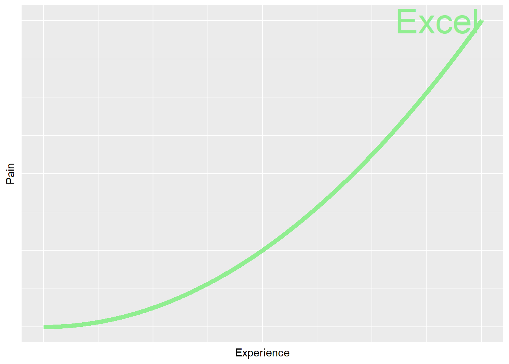
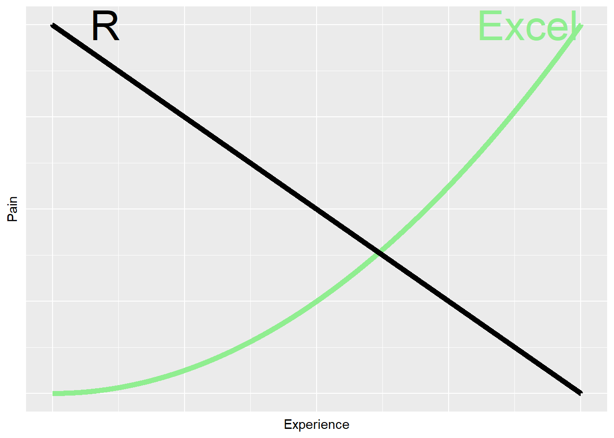

No feedback found for this session
Why bother with R?
R
beginner
pre-beginner
Session outline
- this session is ü•¨ - a non-technical introduction for pre-beginners
- two minute overview of R
- one minute history of R
- five use cases in H&SC
- R code and practice and a bit of R vs not-R
- next steps and training
A brief overview of R
R is a free software environment for statistical computing and graphics (r-project.org)
- free and open-source
- multiplatform
- large user base
- prominent in health, industry, biosciences
Who owns R?
Architecture
- R is modular
- 20 thousand + packages
- Enormous scope of applications
- Design questions often hinge on finding the right package
- e.g. this presentation was created in R Quarto using Revealjs
- So there’s a good reason that R can be confusing: it’s not one thing, but many
A brief history of R
-
it starts with the S programming language
Aimed: to “turn ideas into software, quickly and faithfully” (Chambers 1998)
-
Robert Gentleman and Ross Ihaka (Ihaka 1998)
- Interest in extending the tools available in S
- Early transition to free software model
- 1997 “core group”
Use cases
Statistical testing
| college | finrela |
|---|---|
| degree | below average |
| no degree | below average |
| degree | below average |
library(infer)
chisq_test(gss, college ~ finrela) |>
knitr::kable()| statistic | chisq_df | p_value |
|---|---|---|
| 30.68252 | 5 | 1.08e-05 |
chi-squared test of independence using (Couch et al. 2021)
PRISMA 2020 flow diagrams

PRISMA flow diagram using PRISMA2020 (Haddaway, Pritchard, and McGuinness 2021)
Mapping

Choropleth map using geojsonio
Posters

Conference poster using posterdown (Thorne 2019), waffle (Rudis and Gandy 2017), and ggalluvial (Brunson and Read 2020)
Natural language processing / wordclouds

Sentiment analysis with wordcloud using tidytext (Silge and Robinson 2016), lexicon, sentimentr, and wordcloud
Uses
Who is using it?
- PHS
- widely across SG
- sporadically used across NHSS boards
Why are they using it?
- to replace troublesome systems
- SPSS and other propriatary systems (licencing costs)
- replacing end-of-life systems (Access e.g.)
- to harmonise analysis across a team (common analysis platform)
- SG committment to open-source code under DSSS
Simplifying analysis
(looking at you, Excel…)
- R separates data from analysis
- “there’s a package for…”
- reproducible analysis
- collaboration
- XmR charts in Excel and in R are a useful object lesson…
XmR charts in Excel (front)

XmR charts in Excel (back)
 XmR charts (R)
XmR charts (R)
XmR charts in R
library(NHSRplotthedots)
readr::read_csv("data/spc/spc2.csv") |>
mutate(date = lubridate::dmy(date)) |>
ptd_spc(members, date, target=50, fix_after_n_points=20) 
R and not-R
- Excel - pain curve…
- Power BI - dashboard, data, built-in to M365 licences
- Tableau - specialist, cost
- Python
- (hundreds of proprietary data analysis platforms)
Pain curves


R code in practice
- really interesting data on poisonous books (via Data is Plural)
# load the downloaded data
books <- readr::read_csv("data/ArsenicalBooks_CSVtoshare_2024-05-04.xlsx - EmeraldGreenBooks.csv") |>
mutate(Date = as.numeric(Date)) - we’ve got data about 266 books
- the oldest book in the set is from 1797, and the youngest from 1892
Where are the poisonous bits of books?
books |>
count(`Arsenical Material`, sort = T) |>
slice(1:7) |>
knitr::kable() | Arsenical Material | n |
|---|---|
| bookcloth | 130 |
| paper cover | 49 |
| decorative green onlay | 19 |
| textblock edges | 16 |
| paper covering | 5 |
| paper over boards | 5 |
| paper spine label | 5 |
When were poisonous books a thing?
books |>
ggplot() +
geom_histogram(aes(x = Date), binwidth = 10) Where were poisonous books a thing?
Next steps
- self-paced
- Swirl
- R4DS (Wickham and Grolemund 2017)
- write/fail/stackoverflow cycle
- PHS Data Science Knowledge Base
- KIND Learning Network training
R beginners club
- social learning on Teams to get you started in R
- see schedule and materials on our community pages
- all welcome and aimed at complete R beginners
References
Brunson, Jason Cory, and Quentin D. Read. 2020. “Ggalluvial: Alluvial Plots in ’Ggplot2’.” http://corybrunson.github.io/ggalluvial/.
Chambers, John M. 1998. Programming with Data: A Guide to the S Language. Berlin: Springer-Verlag.
Couch, Simon P., Andrew P. Bray, Chester Ismay, Evgeni Chasnovski, Benjamin S. Baumer, and Mine Çetinkaya-Rundel. 2021. “Infer: An r Package for Tidyverse-Friendly Statistical Inference” 6: 3661. https://doi.org/10.21105/joss.03661.
Haddaway, Neal R, Chris C Pritchard, and Luke A McGuinness. 2021. “PRISMA2020: R Package and ShinyApp for Producing PRISMA 2020 Compliant Flow Diagrams (Version 0.0.2).” https://doi.org/10.5281/zenodo.5082518.
Ihaka, Ross. 1998. “R: Past and Future History.” Computing Science and Statistics 392396. https://www.stat.auckland.ac.nz/~ihaka/downloads/Interface98.pdf.
Rudis, Bob, and Dave Gandy. 2017. “Waffle: Create Waffle Chart Visualizations in R.” https://CRAN.R-project.org/package=waffle.
Silge, Julia, and David Robinson. 2016. “Tidytext: Text Mining and Analysis Using Tidy Data Principles in R” 1. https://doi.org/10.21105/joss.00037.
Thorne, W. Brent. 2019. “Posterdown: An R Package Built to Generate Reproducible Conference Posters for the Academic and Professional World Where Powerpoint and Pages Just Won’t Cut It.” https://github.com/brentthorne/posterdown.
Wickham, Hadley, and Garrett Grolemund. 2017. R for Data Science : Import, Tidy, Transform, Visualize, and Model Data. First edition. Sebastopol, CA: O’Reilly Media.